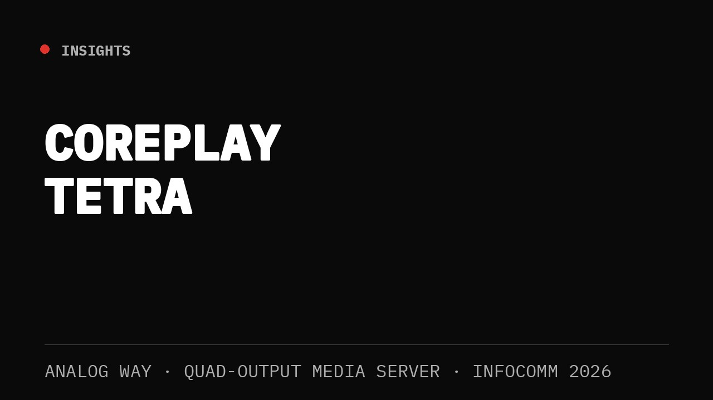

At InfoComm 2026, Analog Way introduced the CorePlay Tetra, a new quad-output media server designed for multi-screen playback environments.
While new playback platforms are introduced regularly, Tetra immediately caught my attention because it appears to address a challenge many of us face in live production: delivering more outputs without adding more complexity.
As display environments continue to expand, we're routinely supporting combinations of LED walls, side screens, confidence monitors, breakout spaces, overflow rooms, and digital signage displays. As these environments grow, so do the demands placed on playback systems.
Historically, scaling playback often meant scaling hardware. More outputs typically required more playback devices, additional signal paths, more synchronization considerations, and ultimately more points of potential failure.
CorePlay Tetra appears to take a different approach.
Less Hardware, More Possibilities
What interests me most is the potential to consolidate multiple playback requirements into a single platform.
From an engineering perspective, every device added to a system introduces additional considerations:
- Power
- Network connectivity
- Signal distribution
- Monitoring
- Redundancy planning
- Troubleshooting
Reducing the number of playback devices while maintaining flexibility can simplify an entire production workflow.
That's particularly valuable in environments where rack space, setup time, technical resources, and operational efficiency are critical factors.
Designed for Modern Display Environments
Over the last several years, event design has evolved beyond the traditional single-screen presentation format.
Today, it's common to see productions utilizing:
- Large-format LED canvases
- Multiple scenic displays
- Dedicated confidence systems
- Overflow and breakout room distribution
- Hybrid audience experiences
- Simultaneous content destinations
Playback systems are expected to support all of these requirements while remaining reliable and easy to operate.
If CorePlay Tetra delivers on its intended design goals, it could become a practical solution for production teams looking to simplify multi-screen content delivery without sacrificing capability.
Where I See Potential
Several applications immediately come to mind.
Corporate General Sessions
Supporting multiple presentation destinations from a centralized playback platform can simplify system design and operational management.
Breakout Environments
Content can potentially be distributed across multiple spaces without requiring separate playback systems for each room.
Houses of Worship
Main screens, side screens, lobby displays, and confidence monitors often require coordinated content delivery. A centralized playback platform could simplify that workflow.
Museums and Experience Centers
Permanent installations frequently require synchronized playback across multiple displays while minimizing equipment footprint and maintenance requirements.
LED-Centric Productions
As LED deployments continue to grow in size and complexity, the ability to manage multiple outputs from a single platform becomes increasingly attractive.
A Reflection of a Larger Trend
The introduction of CorePlay Tetra reflects a broader shift taking place across the industry.
Clients continue to request larger canvases, more displays, and richer visual experiences. At the same time, technical teams are expected to deliver those experiences with greater efficiency, reliability, and flexibility.
Success is no longer measured solely by how much technology we can deploy. Increasingly, it's about how effectively we can simplify systems while maintaining performance.
The platforms that stand out are often the ones that help operators accomplish more with fewer moving parts.
Final Thoughts
I'm looking forward to getting hands-on time with CorePlay Tetra and seeing how it performs in real-world production environments.
As display systems continue to evolve, the challenge isn't simply delivering more outputs — it's doing so while maintaining reliability, efficiency, and operational simplicity. Solutions that help reduce system complexity without sacrificing capability are always worth paying attention to.
CorePlay Tetra appears to be designed with that goal in mind. If it delivers on its promise, it could provide production teams with a practical way to streamline multi-screen playback workflows while supporting the growing demands of modern visual experiences.
For engineers, operators, and technical teams working in increasingly complex environments, that's a development worth watching.